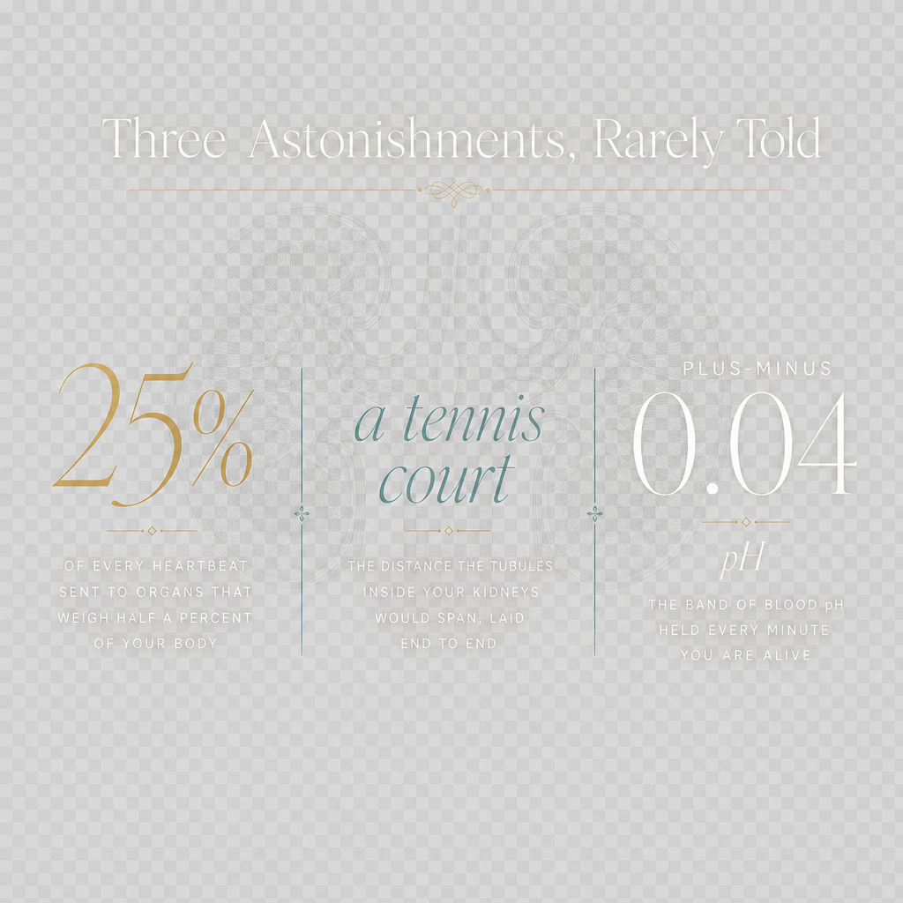
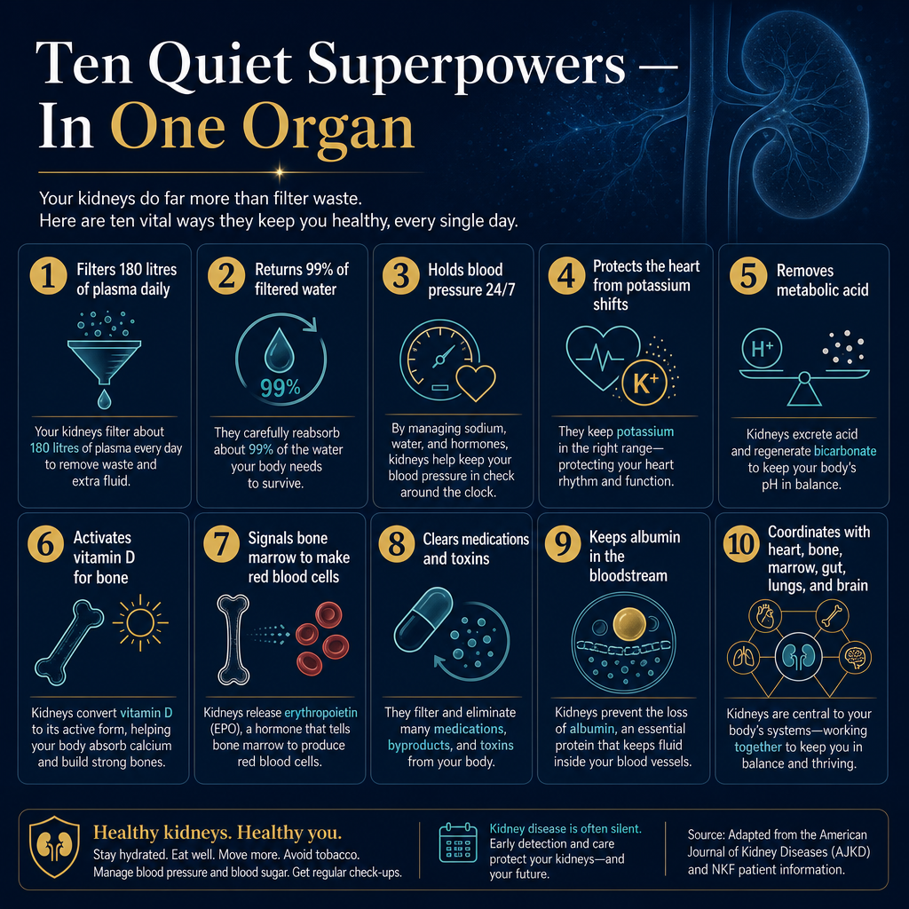

Every twenty-four hours,
one hundred and eighty litres
of you pass through filters
the size of a fist.Sa bawat dalawampu't apat na oras,
isang daan at walumpung litro
ng inyong dugo ay dumadaan sa mga salaan
na kasing laki ng kamao.Sa matag kawhaan ug upat ka oras,
usa ka gatus ug kawaloan ka litro
sa imong lawas ang moagi sa mga salaan
nga sukaranan sa gidak-on sa kamot.
There is no sound. There is no signal. The body's most demanding labour is also its quietest. This is a meditation on what the normal kidneys do — and on the silent astonishments that almost no one is taught.Walang tunog. Walang signal. Ang pinaka-mapaghanap na gawain ng katawan ay pati na rin ang pinaka-tahimik. Ito ay isang pagmumuni-muni sa ginagawa ng normal na mga bato — at sa mga tahimik na kataka-takang halos walang sinumang itinuro.Walay tingog. Walay signal. Ang labing grabe nga trabaho sa lawas mao usab ang labing hilom. Kini usa ka pagpamalandong sa gibuhat sa normal nga mga kidney — ug sa mga hilom nga katingalahan nga halos wala'y nakatudlo.
A constant refining of what flows through.Isang patuloy na pagsasala ng lahat ng dumadaan.Usa ka kanunay nga pagsala sa tanan nga moagi.
Two organs, smaller than your hands, doing in silence what no engineered membrane has matched. The numbers below are not metaphor — they are arithmetic, repeating itself, every minute, for as long as you live.Dalawang organ, mas maliit kaysa sa inyong mga kamay, gumagawa nang tahimik ng isang bagay na hindi pa naabot ng anumang artipisyal na membrane. Ang mga bilang sa ibaba ay hindi metapora — ito ay aritmetika, paulit-ulit, bawat minuto, habang kayo ay nabubuhay.Duha ka organ, mas gamay kay sa imong mga kamot, nagtrabaho sa hilom sa usa ka butang wala pa naabot sa bisan unsang artipisyal nga membrane. Ang mga numero sa ubos dili metapora — kini aritmetika, gisubli-subli, matag minuto, samtang buhi ka.
The roles almost no one learns about.Ang mga tungkulin na halos walang nakakaalam.Ang mga papel nga halos walay nahibalo.
Behind the famous job of making urine, the kidney quietly carries on five other careers — each of them critical, each of them invisible to the person they are saving.Sa likod ng sikat na trabaho ng paggawa ng ihi, ang bato ay tahimik na gumaganap ng limang iba pang papel — bawat isa ay kritikal, bawat isa ay hindi nakikita ng taong kanilang iniligtas.Sa likod sa bantog nga trabaho sa paghimo og ihi, ang kidney hilom nga nagpadayon sa lima pa ka papel — ang matag usa kritikal, ang matag usa dili makita sa tawo nga ilang giluwas.
Not a drain.
A decision-maker.Hindi isang daluyan.
Isang gumagawa ng desisyon.Dili usa ka drain.
Usa ka magdedesisyon.
Every minute, the kidney decides what must leave, what must stay, what must be recycled, and what must be signaled to the rest of the body. It is not a passive sieve. It is the most discriminating organ you have — analyzing each litre of plasma against the body's running ledger of need, and editing it accordingly. Filtration is only the first step. Reabsorption is the recycling. Hormones are the signals it sends back. Acid-base and mineral balance are the running adjustments. The kidney's real work is judgment.Sa bawat minuto, ang bato ay nagdedesisyon kung ano ang dapat lumabas, kung ano ang dapat manatili, kung ano ang dapat i-recycle, at kung ano ang dapat i-signal sa natitirang bahagi ng katawan. Hindi ito isang pasibong salaan. Ito ang pinaka-mapanuri na organ na mayroon kayo — sinusuri ang bawat litro ng plasma laban sa patuloy na listahan ng pangangailangan ng katawan, at ine-edit ito nang naaangkop. Ang pagsasala ay unang hakbang lamang. Ang reabsorption ay ang pag-recycle. Ang mga hormone ay ang mga signal na ipinapadala nito. Ang acid-base at mineral balance ay ang mga patuloy na pag-aayos. Ang tunay na gawain ng bato ay paghatol.Sa matag minuto, ang kidney nagdesisyon kung unsa ang kinahanglan mogawas, unsa ang kinahanglan magpabilin, unsa ang kinahanglan i-recycle, ug unsa ang kinahanglan i-signal sa nahibilin nga bahin sa lawas. Dili kini pasibo nga salaan. Kini ang labing mahukmanon nga organ nga anaa kanimo — gianalisa ang matag litro sa plasma batok sa nagpadayon nga listahan sa panginahanglan sa lawas, ug gi-edit kini sumala. Ang pagsala unang lakang lamang. Ang reabsorption mao ang pag-recycle. Ang mga hormone mao ang mga signal nga ipadala niini. Ang acid-base ug mineral balance mao ang nagpadayon nga mga pag-adjust. Ang tinuod nga trabaho sa kidney mao ang paghukom.
It decides what must leave, what must stay, what must be balanced, and what must be signaled to the rest of the body.Nagdesisyon ito kung ano ang dapat lumabas, kung ano ang dapat manatili, kung ano ang dapat balansehin, at kung ano ang dapat i-signal sa natitirang bahagi ng katawan.Nagdesisyon kini kung unsa ang kinahanglan mogawas, unsa ang kinahanglan magpabilin, unsa ang kinahanglan ibalanse, ug unsa ang kinahanglan i-signal sa nahibilin nga bahin sa lawas.
What you would feel
if each quiet labor stopped.Ang mararamdaman ninyo
kung huminto ang bawat tahimik na gawain.Ang imong mabati
kon mohunong ang matag hilom nga trabaho.
Most people do not know which symptom belongs to which kidney role. The table below makes the connection explicit — physiology on the left, the symptom you would actually notice on the right. It is also why early detection matters: the kidney has so much reserve that the symptoms are usually the last thing to arrive.Karamihan sa mga tao ay hindi alam kung aling sintomas ang naaangkop sa aling tungkulin ng bato. Ang talahanayan sa ibaba ay nagpapakita ng koneksyon nang malinaw — ang pisyolohiya sa kaliwa, ang sintomas na talagang mapapansin ninyo sa kanan. Ito rin ang dahilan kung bakit mahalaga ang maagang pagtuklas: napakaraming reserba ng bato kaya ang mga sintomas ay karaniwang huli na darating.Kadaghanan sa mga tawo wala mahibalo kung unsang sintomas ang iya sa unsang papel sa kidney. Ang lamesa sa ubos nagpakita sa koneksyon nga klaro — ang pisyolohiya sa wala, ang sintomas nga tinuod ninyong mapansin sa tuo. Mao usab kini ang hinungdan nga ang sayo nga pagkakita importante: daghan kaayo og reserba ang kidney mao nga ang mga sintomas sagad ang katapusang moabot.
Numbers that should make you pause.Mga bilang na dapat magpahinto sa inyo.Mga numero nga angay nga magpahunong kanimo.

Ten quiet superpowers,
in one organ.Sampung tahimik na superpower,
sa isang organ.Napulo ka hilom nga superpower,
sa usa ka organ.

Now that you know what they do —
learn how to protect them.Ngayon na alam ninyo kung ano ang ginagawa nila —
alamin kung paano sila pangalagaan.Karon nga nahibalo na kamo kung unsa ang ilang gibuhat —
pagkat-on kung unsaon sila pagpanalipod.
A serum creatinine and a urine protein test cost less than a meal and take less than ten minutes. They are the only way to know whether the silent organ is still keeping its count. Beyond the tests, there are eighty kidney-health guides on this site — written for patients, caregivers, and clinicians.Ang serum creatinine at urine protein test ay mas mura kaysa sa isang pagkain at tumatagal ng wala pang sampung minuto. Ito ang tanging paraan upang malaman kung ang tahimik na organ ay patuloy pa ring nagbibilang. Bukod sa mga pagsusuri, mayroon itong walumpung gabay sa kalusugan ng bato sa site na ito — isinulat para sa mga pasyente, tagapag-alaga, at mga klinisyan.Ang serum creatinine ug urine protein test mas barato pa kay sa usa ka pagkaon ug mokabat og wala'y napulo ka minuto. Kini ang bugtong paagi aron mahibalo kung ang hilom nga organ nagpadayon pa sa pagbilang. Labaw pa sa mga pagsusi, adunay kawaloan ka giya sa kahimsog sa kidney sa site nga kini — gisulat alang sa mga pasyente, mga nagtatambal, ug mga klinisyan.
Read the kidney guidesBasahin ang mga gabay sa batoBasaha ang mga giya sa kidney →